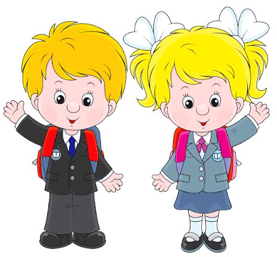

Це сайт для 7-А класу
головна мета це перегляд інформації стосовно чергування
Інформацію стосовно чергування а конкретно:
рази чергування, тривоги коли діти не почергували, дати чергування.
Почав десь 20.09-27.09 на замовлення,
ніякого замовлення власна ініціатива
Просто став старостою 2-гий раз
вирішив зробити щось важливе.
